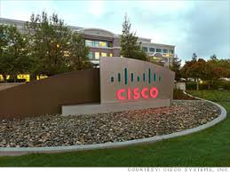
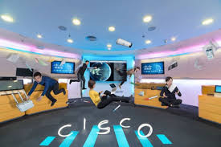

Cisco Systems

Cisco Systems, Inc. is an American multinational technology conglomerate headquartered in San Jose,
California, in the center of Silicon Valley. Cisco develops, manufactures and sells networking hardware,
software, telecommunications equipment and other high-technology services and products.[3]
Through its numerous acquired subsidiaries, such as OpenDNS, Webex, Jabber and Jasper, Cisco specializes
in specific tech markets, such as the Internet of Things (IoT), domain security and energy management.
Cisco is incorporated in California.[4]
Cisco's products and services focus on three market segments—enterprise, service provider, midsize and small business.
Cisco provides IT products and services across five major technology areas: Networking (including Ethernet, optical, wireless and mobility), Security, Collaboration (including voice, video, and data), Data Center, and the Internet of Things.[126]
Cisco has grown increasingly popular in the Asia-Pacific region over the last three decades[when?] and
is the dominant vendor in the Australian market with leadership across all
market segments.[127] It uses its Australian office as one of the main
headquarters for the Asia-Pacific region.
VoIP services:
Cisco became a major provider of Voice over IP to enterprises and is now moving into the home user market through its acquisitions of Scientific Atlanta and Linksys. Scientific Atlanta provides VoIP equipment to cable service providers such as Time Warner, Cablevision, Rogers Communications, UPC and others; Linksys has partnered with companies such as Skype, Microsoft and Yahoo! to integrate consumer VoIP services with wireless and cordless phones.